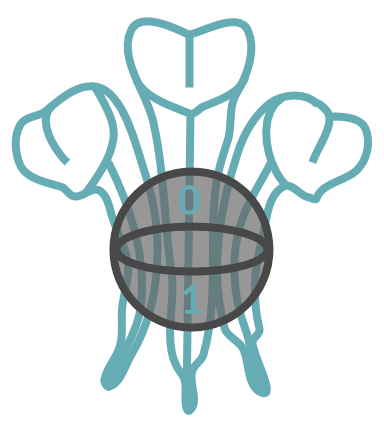

Created by Robert Nester
Prince of Wales Quantum Computing Club

Educational Resources
A Briefer History of Time (Leonard Mlodinow and Stephen Hawking) - Chapter 9 (Quantum Gravity)
WIRED Guide to Quantum Computing
Current State of Quantum Computing (Computerphile)
Quantum Instruction Set (Computerphile)
SciPy 2018 pyQuil Presentation
pyQuil Documentation
pyQuil 2.0 Documentation (Not Available for Windows Yet)
Additional pyQuil Documentation
pyQuil Examples (Quantum Dice)
University of California Quantum Mechanics and Quantum Computation Lectures
The Mathematics of Quantum Computers (Infinite Series)
Linear Algebra Course
Quantum Computation and Quantum Information (Michael A. Nielsen and Isaac L. Chuang)
MIT Quantum Information Science I, Part 1
MIT Quantum Computing Curriculum (Series Continues)
News
MIT Technology Review
Quantum Computing Report
Phys.org Quantum Computing News
Science Daily Quantum Computing News
Google News "Quantum Computing"